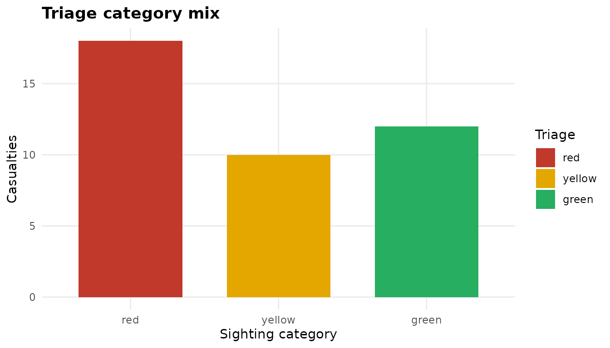
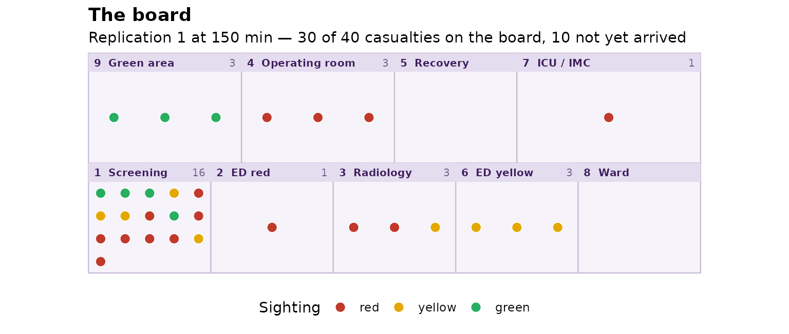
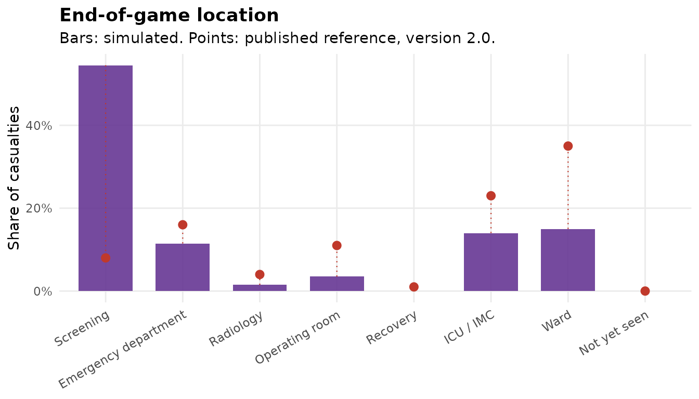
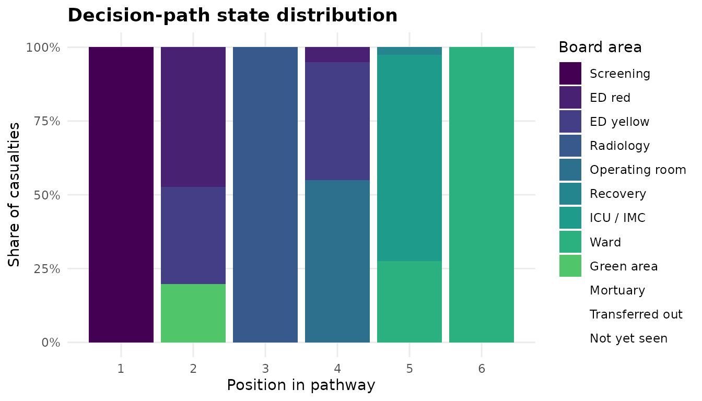
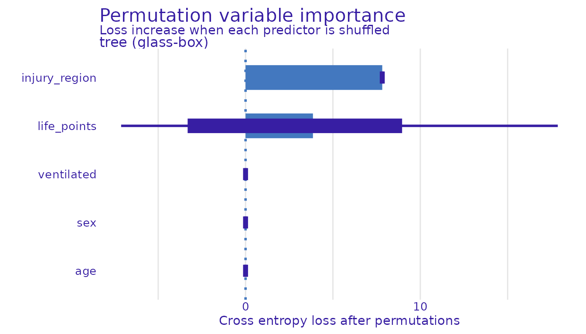

Getting started with sandtablR
Raban Heller, Gerhard Achatz
Source:vignettes/sandtablR.Rmd
sandtablR.RmdsandtablR is a framework for mass-casualty incident
tabletop exercises: generate a casualty cohort, run it across a board,
capture the decisions that were made, then model and explain them.
The steps below are the whole workflow. Everything the Shiny workbench does, it does by calling these functions.
1. A cohort
A cohort is a validated tibble subclass. Every casualty carries a card: demographics, life points, whether they are ventilated, the injury region, and the true sighting category and therapy concept.
co <- sdt_synthetic_cohort(n = 40, seed = 1)
co
#> # A cohort: 40 casualties
#> # Triage: red: 18 yellow: 10 green: 12
#> id age sex life_points ventilated injury_region triage therapy
#> <chr> <int> <chr> <int> <lgl> <chr> <chr> <chr>
#> 1 P001 78 m 2 TRUE multiple red TASC
#> 2 P002 41 m 2 TRUE thorax red DCS
#> 3 P003 52 m 5 FALSE extremity green none
#> 4 P004 42 m 4 FALSE thorax yellow TASC
#> 5 P005 31 m 2 TRUE multiple red DCS
#> 6 P006 45 m 4 FALSE multiple yellow TASC
#> 7 P007 15 f 4 FALSE extremity yellow DCS
#> 8 P008 64 m 6 FALSE extremity green none
#> 9 P009 44 m 5 FALSE head green none
#> 10 P010 75 f 1 FALSE thorax red TASC
#> # ℹ 30 more rows
#> # ℹ 1 more variable: arrival_order <int>Marginals come from sdt_reference(), which separates two
things that are easy to conflate: values attributed to the published
evaluation, and modelling choices sandtablR made where the
source does not pin one.
sdt_reference("published")$triage_mix
#> red yellow green
#> 0.444 0.236 0.319Validation is vectorised over columns rather than looping over rows, so a bad import reports everything wrong with it at once rather than one problem per attempt:
bad <- co
bad$triage <- as.character(bad$triage)
bad$triage[c(2, 5)] <- "purple"
bad$life_points[3] <- 99
sdt_cohort(bad)
#> Error in `sdt_cohort()`:
#> ! `x` is not a valid cohort.
#> ✖ triage: must be one of "red", "yellow", and "green" in row 2 and 5.
#> ✖ life_points: must lie in 0:6 in row 3.2. A scenario
A scenario is a cohort plus the board’s resource capacities.
sc <- sdt_scenario(co, resources = list(or = 3, icu_imc = 6, ward = 20),
name = "concert")
sc
#> <scenario> concert: 40 casualties
#> triage mix — red: 18, yellow: 10, green: 12
#> resources — triage: 1, ed_red: 1, ed_yellow: 1, diagnostics: 1, or: 3, recovery: 1, icu_imc: 6, ward: 20, green_area: 1, morgue: 1, external: 1, not_seen: 1
summary(sc)
#> # A cohort: 8 casualties
#> # Triage: red: 2 yellow: 3 green: 3
#> triage therapy n
#> <chr> <chr> <int>
#> 1 green DCS 1
#> 2 green TASC 2
#> 3 green none 9
#> 4 red DCS 5
#> 5 red TASC 13
#> 6 yellow DCS 4
#> 7 yellow TASC 5
#> 8 yellow none 1
Bar chart of casualties per sighting category. Synthetic demonstration.
3. Simulate patient flow
sdt_simulate() maps the scenario onto a discrete-event
model and routes each casualty by sighting category and therapy
concept.
run <- sdt_simulate(sc, replications = 5, seed = 1, verbose = FALSE)
run
#> <game_run> 5 replications over 270 minutes
#> 42 casualty records, 455 area eventsThe engine’s real output is the event log: one row per casualty per board area, with when it entered and left.
head(run$events)
#> # A tibble: 6 × 8
#> replication id step area start end duration service_time
#> <int> <chr> <int> <chr> <dbl> <dbl> <dbl> <dbl>
#> 1 1 P001 1 triage 1.86 10.00 8.14 8.14
#> 2 1 P001 2 ed_red 10.00 21.3 11.3 11.3
#> 3 1 P001 3 diagnostics 21.3 40.0 18.7 18.7
#> 4 1 P001 4 or 40.0 103. 62.9 62.9
#> 5 1 P001 5 icu_imc 103. 153. 49.8 49.8
#> 6 1 P002 1 triage 6.07 21.3 15.2 3.73Three dispositions are terminal by design, and that is what reproduces the published end-of-game distribution: critical care is where a casualty stays, a ward bed is the end of the line, and a casualty who is worked up but not taken to theatre is still being held in the emergency department when the game is called.
The quickest way to see what the engine did is to look at the board.
Every casualty is a point in the area it had reached at that moment,
laid out as the nine areas of the published board. Change
at and you watch the stream move across it.
sdt_plot_board(run, at = 150)
The nine board areas with casualties drawn as coloured points. Synthetic demonstration.
summary(run, reference = TRUE)
#> # A tibble: 8 × 6
#> area label n proportion reference difference
#> <chr> <chr> <int> <dbl> <dbl> <dbl>
#> 1 triage Screening 109 0.545 0.08 0.465
#> 2 ed Emergency department 23 0.115 0.16 -0.045
#> 3 diagnostics Radiology 3 0.015 0.04 -0.025
#> 4 or Operating room 7 0.035 0.11 -0.075
#> 5 recovery Recovery 0 0 0.01 -0.01
#> 6 icu_imc ICU / IMC 28 0.14 0.23 -0.09
#> 7 ward Ward 30 0.15 0.35 -0.2
#> 8 not_seen Not yet seen 0 0 0 0
sdt_plot_end_state(run)
Simulated end-of-game location against the published reference. Synthetic demonstration.
That calibration is checkable rather than asserted:
sdt_reference_scenario() builds the board the engine was
tuned on, and the package’s own test suite re-runs the comparison.
4. Decision paths
Because the event log records every area entry, each casualty has a full ordered pathway.
head(sdt_decision_paths(run), 8)
#> # A tibble: 8 × 7
#> replication id step area start end duration
#> <int> <chr> <int> <chr> <dbl> <dbl> <dbl>
#> 1 1 P001 1 triage 1.86 10.00 8.14
#> 2 1 P001 2 ed_red 10.00 21.3 11.3
#> 3 1 P001 3 diagnostics 21.3 40.0 18.7
#> 4 1 P001 4 or 40.0 103. 62.9
#> 5 1 P001 5 icu_imc 103. 153. 49.8
#> 6 1 P002 1 triage 6.07 21.3 15.2
#> 7 1 P002 2 ed_red 21.3 40.0 18.7
#> 8 1 P002 3 diagnostics 40.0 46.1 6.11sdt_decision_consistency() asks how repeatably the same
casualty was handled across replications, as a distance between its
pathways rather than agreement on a single label.
consistency <- sdt_decision_consistency(run)
head(consistency[order(consistency$consistency), ])
#> # A tibble: 6 × 4
#> id n_paths n_distinct consistency
#> <chr> <int> <int> <dbl>
#> 1 P019 5 3 0.44
#> 2 P014 5 3 0.45
#> 3 P020 5 3 0.5
#> 4 P022 5 4 0.508
#> 5 P021 5 3 0.517
#> 6 P010 5 4 0.525
sdt_plot_sequences(run, type = "distribution")
Share of casualties in each board area by position in the pathway. Synthetic demonstration.
With TraMineR and WeightedCluster
installed, sdt_seq_cluster() groups pathways into a few
characteristic routes through the board.
5. Model the decisions
The card’s true category follows from life points by construction, so
every engine scores near 1 on it and the comparison says nothing. What
is worth modelling is what a participant called.
sdt_add_decisions() simulates that using the published
per-category hit rates.
labelled <- sdt_add_decisions(co, seed = 2)
sdt_consistency_score(labelled$triage, labelled$called_triage)
#> # A tibble: 1 × 4
#> .metric .estimator .estimate n
#> <chr> <chr> <dbl> <int>
#> 1 kap multiclass 0.563 40
fit <- sdt_fit(labelled, target = "called_triage", engine = "tree",
tune = FALSE, folds = 3, seed = 1, verbose = FALSE)
fit
#> <sdt_model> tree (glass-box) -> called_triage, roc_auc 0.606
#> 5 predictors: age, sex, life_points, ventilated, injury_region
sdt_metrics(fit)
#> # A tibble: 4 × 3
#> .metric .estimator .estimate
#> <chr> <chr> <dbl>
#> 1 accuracy multiclass 0.583
#> 2 f_meas macro 0.5
#> 3 kap multiclass 0.333
#> 4 roc_auc hand_till 0.606sdt_workflowset() screens every installed engine onto
one leaderboard, with glass-box and black-box models side by side. See
vignette("model-bench", package = "sandtablR").
6. Explain
Explanations are model-agnostic, so the same views work on a decision tree and on a random forest.
sdt_importance(fit, n_permutations = 5)
Permutation variable importance. Synthetic demonstration.
The workbench
sdt_run_app() launches an interactive workbench over all
of the above: build a scenario, run the board, annotate decisions, train
and compare models, explain them, and analyse decision paths. It also
renders the session to a self-contained HTML report.
Provenance
The domain model (sighting categories, ETC/DCS/TASC therapy concepts,
board areas, patient-card fields) follows the TDSC tabletop exercise as
described in the open-access evaluation by Achatz et al. (2023), Eur
J Trauma Emerg Surg 49(2):607–617, doi:10.1007/s00068-022-02217-1.
sandtablR is a generic re-implementation built from
published specifications, and is not affiliated with the TDSC
course.
Save and reproduce a run
path <- tempfile(fileext = ".rds")
saveRDS(list(scenario = sc, run = run, seed = 1,
session = sessionInfo()), path)
restored <- readRDS(path)
stopifnot(identical(run$events, restored$run$events))Retain the software revision and scenario alongside every seed. A reproducible simulation is not evidence that its assumptions describe a real incident. See the model bench for a separate synthetic prediction example.
Software environment
sessionInfo()
#> R version 4.6.1 (2026-06-24)
#> Platform: x86_64-pc-linux-gnu
#> Running under: Ubuntu 26.04.1 LTS
#>
#> Matrix products: default
#> BLAS: /usr/lib/x86_64-linux-gnu/openblas-pthread/libblas.so.3
#> LAPACK: /usr/lib/x86_64-linux-gnu/openblas-pthread/libopenblasp-r0.3.32.so; LAPACK version 3.12.0
#>
#> locale:
#> [1] LC_CTYPE=C.UTF-8 LC_NUMERIC=C LC_TIME=C.UTF-8
#> [4] LC_COLLATE=C.UTF-8 LC_MONETARY=C.UTF-8 LC_MESSAGES=C.UTF-8
#> [7] LC_PAPER=C.UTF-8 LC_NAME=C LC_ADDRESS=C
#> [10] LC_TELEPHONE=C LC_MEASUREMENT=C.UTF-8 LC_IDENTIFICATION=C
#>
#> time zone: UTC
#> tzcode source: system (glibc)
#>
#> attached base packages:
#> [1] stats graphics grDevices utils datasets methods base
#>
#> other attached packages:
#> [1] sandtablR_0.0.0.9000
#>
#> loaded via a namespace (and not attached):
#> [1] tidyselect_1.2.1 DALEX_2.5.4 viridisLite_0.4.3
#> [4] timeDate_4052.112 dplyr_1.2.1 farver_2.1.2
#> [7] S7_0.2.2 fastmap_1.2.0 digest_0.6.39
#> [10] rpart_4.1.27 timechange_0.4.0 lifecycle_1.0.5
#> [13] yardstick_1.4.0 survival_3.8-6 tailor_0.1.0
#> [16] magrittr_2.0.5 compiler_4.6.1 rlang_1.3.0
#> [19] sass_0.4.10 tools_4.6.1 utf8_1.2.6
#> [22] yaml_2.3.12 data.table_1.18.6.1 knitr_1.52
#> [25] labeling_0.4.3 htmlwidgets_1.6.4 DiceDesign_1.10
#> [28] RColorBrewer_1.1-3 parsnip_1.6.1 withr_3.0.3
#> [31] purrr_1.2.2 workflows_1.3.0 desc_1.4.3
#> [34] nnet_7.3-20 grid_4.6.1 tune_2.1.0
#> [37] DALEXtra_2.3.1 sparsevctrs_0.3.6 future_1.80.0
#> [40] ggplot2_4.0.3 globals_0.20.0 scales_1.4.0
#> [43] MASS_7.3-65 cli_3.6.6 rmarkdown_2.32
#> [46] ragg_1.5.2 generics_0.1.4 otel_0.2.0
#> [49] future.apply_1.21.0 cachem_1.1.0 simmer_4.4.7
#> [52] splines_4.6.1 dials_1.4.4 parallel_4.6.1
#> [55] ingredients_2.3.0 vctrs_0.7.3 hardhat_1.4.3
#> [58] Matrix_1.7-5 jsonlite_2.0.0 listenv_1.1.0
#> [61] systemfonts_1.3.2 gower_1.0.2 tidyr_1.3.2
#> [64] jquerylib_0.1.4 recipes_1.4.0 glue_1.8.1
#> [67] parallelly_1.48.0 pkgdown_2.2.1 codetools_0.2-20
#> [70] rsample_1.3.2 lubridate_1.9.5 gtable_0.3.6
#> [73] tibble_3.3.1 pillar_1.11.1 furrr_0.4.0
#> [76] htmltools_0.5.9 ipred_0.9-16 lava_1.10
#> [79] R6_2.6.1 textshaping_1.0.5 evaluate_1.0.5
#> [82] lattice_0.22-9 bslib_0.12.0 class_7.3-23
#> [85] Rcpp_1.1.2 prodlim_2026.03.11 xfun_0.62
#> [88] fs_2.1.0 pkgconfig_2.0.3